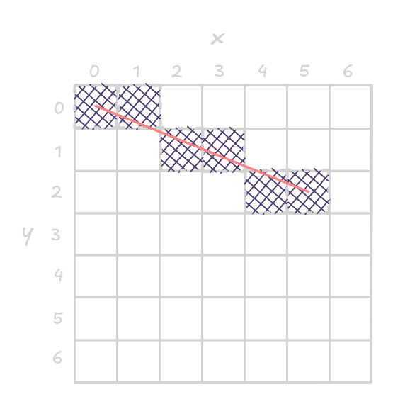
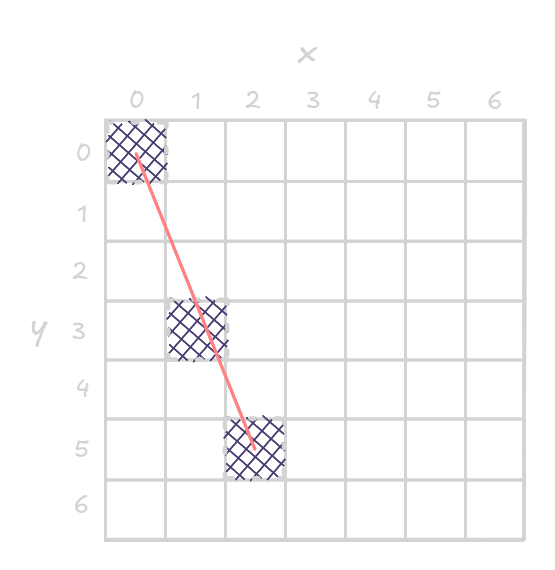
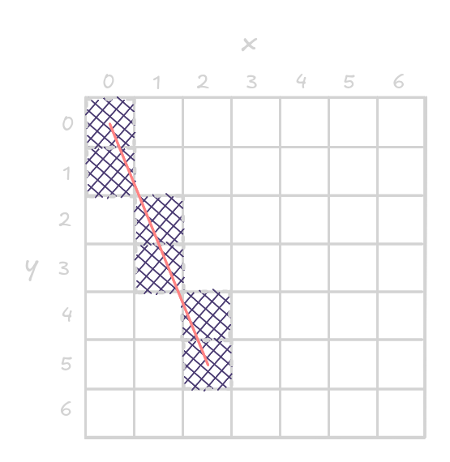
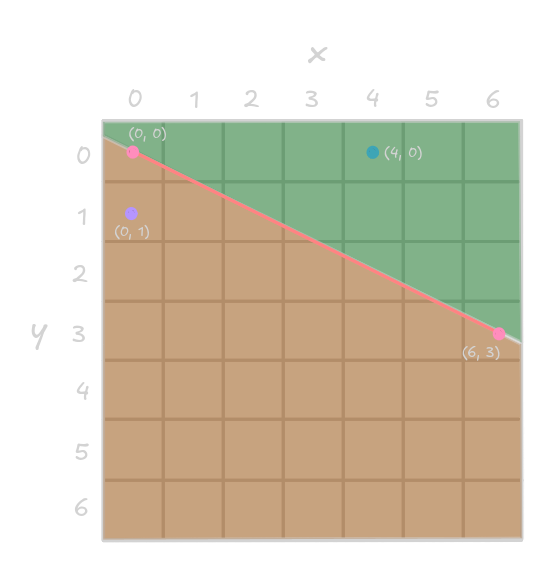
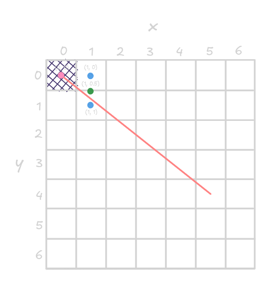
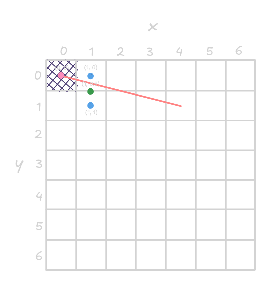

Hey there! Since my last blog post on lambda calculus, I've been playing around with OCaml, and I recently started working on a PICO-8-like fantasy console Besides adding support for Lua as a scripting language, I'm thinking of adding support for Common Lisp as well, because why not? . While working on it, I came across some interesting algorithms, mainly related to computer graphics, and one of them is Bresenham's line algorithm.
Bresenham's line algorithm is a computer graphics algorithm that determines the set of pixels that should be selected to form the closest approximation of a straight line passing through two points, using only integer arithmetic. The core idea of this algorithm is later applied to other shapes, like circles, in Midpoint circle algorithm, and Bézier curves as well.
In this blog post, we'll take a look at how Bresenham's algorithm works under the hood along with a short implementation of it in OCaml.
NOTE: Throughout this entire blog post, in the graphs, the \(y\)-axis is inverted, and a pixel is a unit cell with integer indices \((x, y)\) whereas a point is a real-valued position \((u, v)\). A pixel \((x, y)\) is centered at point \((x, y)\) i.e. it is a square whose top-left corner is \((x - 0.5, y - 0.5)\) and bottom-right corner is \((x + 0.5, y + 0.5)\).
Given two points, \((x_0, y_0)\) and \((x_1, y_1)\), the slope of the line through them is:
\[m = \frac{y_1 - y_0}{x_1 - x_0}\]Using the point-slope form, the equation of the line is:
\[y = y_0 + m(x - x_0)\]To draw the line on a screen, which is basically a grid of pixels, we can step through each integer \(x\)-coordinate from \(x_0\) to \(x_1\), calculate the corresponding \(y\)-coordinate using the equation above, and round it to the nearest pixel.
Let's understand what that process looks like using an example. Consider a line passing through \((0, 0)\) and \((5, 2)\) points.
| \(x\) | \(y = 0.4x\) | \(\text{round}(y)\) |
|---|---|---|
| 0 | 0.0 | 0 |
| 1 | 0.4 | 0 |
| 2 | 0.8 | 1 |
| 3 | 1.2 | 1 |
| 4 | 1.6 | 2 |
| 5 | 2.0 | 2 |

Simple enough, right? There is a slight issue with our current approach. We can't always iterate over the \(x\)-axis. This works for the example above because \(|dx| \geq |dy|\). For every unit pixel step along the \(x\)-axis, the corresponding change in \(y\) is at most one pixel, so rounding \(y\) doesn't end up skipping any row while rasterizing the line.
Now consider a line passing through \((0, 0)\) and \((2, 5)\) points.
| \(x\) | \(y = 2.5x\) | \(\text{round}(y)\) |
|---|---|---|
| 0 | 0 | 0 |
| 1 | 2.5 | 3 |
| 2 | 5 | 5 |

As you can see above, some of the rows have been skipped, due to which there are gaps in the rasterized line. To fix this, instead of always iterating over \(x\)-axis, we can iterate over \(y\)-axis when \(|dy| \gt |dx|\).
| \(y\) | \(x = 0.4y\) | \(\text{round}(x)\) |
|---|---|---|
| 0 | 0 | 0 |
| 1 | 0.4 | 0 |
| 2 | 0.8 | 1 |
| 3 | 1.2 | 1 |
| 4 | 1.6 | 2 |
| 5 | 2.0 | 2 |

The algorithm can be now expressed as:
Now that we've got a rough idea of how the algorithm works, we can
take a look at the OCaml implementation. Over here,
set function writes to a framebuffer, which is then
used by the graphics library, which is Raylib in this case, to
render the scene.
let round f = int_of_float (Float.round f)
let naive_line_drawing x0 y0 x1 y1 c =
let dx = x1 - x0 in
let dy = y1 - y0 in
if abs dx >= abs dy
then (
(* guard for the case where both the deltas are zero i.e. a single point *)
let m = if dx = 0 then 0.0 else float dy /. float dx in
for x = min x0 x1 to max x0 x1 do
let y = float y0 +. (m *. float (x - x0)) |> round in
set x y c
done
)
else (
let m = float dx /. float dy in
for y = min y0 y1 to max y0 y1 do
let x = float x0 +. (m *. float (y - y0)) |> round in
set x y c
done
)
;;open Raylib
let width = 600
let height = 600
let pixels = CArray.make Color.t (width * height)
let set x y c =
if x >= 0 && x < width && y >= 0 && y < height
then CArray.set pixels ((y * width) + x) c
;;
let round f = int_of_float (Float.round f)
let naive_line_drawing x0 y0 x1 y1 c =
let dx = x1 - x0 in
let dy = y1 - y0 in
if abs dx >= abs dy
then (
(* guard for the case where both the deltas are zero i.e. a single point *)
let m = if dx = 0 then 0.0 else float dy /. float dx in
for x = min x0 x1 to max x0 x1 do
let y = float y0 +. (m *. float (x - x0)) |> round in
set x y c
done
)
else (
let m = float dx /. float dy in
for y = min y0 y1 to max y0 y1 do
let x = float x0 +. (m *. float (y - y0)) |> round in
set x y c
done
)
;;
let () =
init_window width height "bresenham";
set_target_fps 60;
let image = gen_image_color width height Color.black in
let texture = load_texture_from_image image in
unload_image image;
set_texture_filter texture TextureFilter.Point;
naive_line_drawing 20 20 150 150 Color.blue;
update_texture texture (Ctypes.to_voidp (CArray.start pixels));
while not (window_should_close ()) do
begin_drawing ();
clear_background Color.black;
draw_texture_ex texture (Vector2.create 0. 0.) 0. 1.0 Color.white;
end_drawing ()
done;
unload_texture texture
;;J. E. Bresenham developed his line-drawing algorithm while working at IBM's San Jose development lab. By summer 1962, it was being used by digital plotters such as Calcomp plotters which was attached to IBM 1401 which ran the program that calculated a sequence of small movements for the plotter. The plotter then followed those instructions to draw the line.
The interesting part is that at that time, the processors didn't have instructions for either multiplication, division, or floating point arithmetic. Bresenham's line-drawing algorithm only uses operations related to integer arithmetic.
In the naïve line-drawing algorithm, we used integer-to-float conversions, float multiplication and float division in every single step of the loop. The per-pixel cost of this adds up very quickly in tight loops or very complicated rasters.
Apart from the performance aspect, Bresenham's line-drawing algorithm is also very deterministic and portable, as it only depends on integer arithmetic.
The initial version of Bresenham's algorithm is only applicable to line segments present in the first octant, where \(x_0 \leq x_1\) and \(y_0 \leq y_1\) and the slope \(m\) is in between 0 to 1 i.e. \(x_1 - x_0 \geq y_1 - y_0\).
While iterating over the \(x\)-axis in the first octant, the increment in the \(y\)-axis would be at most 1, i.e., the next pixel would either be in the same row or the very next row. To figure out where the next pixel should be placed, Bresenham's line-drawing uses the difference in signs of the function value of points present across the line.

In the example above, the line is \(y = 0.5x\). It can also be expressed in implicit form as \(f(x, y) = y - 0.5x\).
In the above example, the purple point is (0, 1) and the blue point is (4, 0).
Say the starting point is \((x_0, y_0)\), so the first pixel would be the one centered at \((x_0, y_0)\), we have to then figure out where the next pixel would land, whether it'll be in the same row at \((x_0 + 1, y_0)\) or the next row at \((x_0 + 1, y_0 + 1)\).
The trick to figure that out is to check the sign of the function value at the midpoint, i.e., \(f(x_0 + 1, y_0 + 0.5)\).
In the next two graphs, the pink point indicates the integer index of the current pixel, and the blue points indicate the possible locations for the next pixel, and the green point is the midpoint between the two blue points.
If \(f(x_0 + 1, y_0 + 0.5)\) is positive, that means that the midpoint is above the line. Inversely, this also means that the line is below the midpoint, hence it is closer to \((x_0 + 1, y_0 + 1)\). So, the next pixel would appear on the next row.

If \(f(x_0 + 1, y_0 + 0.5)\) is negative, that means that the midpoint is below the line. Inversely, this also means that the line is above the midpoint, hence it is closer to \((x_0 + 1, y_0)\). So, the next pixel would appear on the same row.

We know that the equation of a line passing through \((x_0, y_0)\) and \((x_1, y_1)\) points in explict form is:
This can be converted into implict form of \(f(x, y)\)
\[ \Delta x (y - y_0) = \Delta y (x - x_0)\] \[f(x, y) = \Delta y (x - x_0) - \Delta x (y - y_0)\]If the starting pixel is located at \((x_0, y_0)\), then to find the location of the next pixel, we need to compute the sign of \(f(x_0 + 1, y_0 + 0.5)\). As we only care about the sign and not about the magnitude, we can find a generalized expression and then scale it by a certain factor to avoid floating-point operations.
We can multiply the above expression by 2 on both sides to avoid a floating-point multiplication operation. Let's call the value of the first midpoint \(D\).
\[D = 2 \Delta y - \Delta x\]So now the rule becomes as follows:
But over here, we have eliminated the floating-point arithmetic only from the calculation of the first midpoint. We need to calculate the function value for the subsequent midpoints, and it wouldn't be a great idea to find the "generalized" expression for all such possible midpoint values. Instead, we can use incremental updates to update the value of \(D\) as \(f\) is a linear function.
To simplify things a bit, let us derive a short expression which would help us out in the next section: \(f(x + a, y + b) - f(x, y)\) i.e., how much does the value of the function change by moving \((a, b)\)
We know that \(f(x_0 + 1, y_0 + 0.5)\) is equal to \(\Delta y - 0.5 \Delta x\). Let us analyze what would be the subsequent midpoint function values in both possible paths:
If the pixel at \((x_0 + 1, y_0)\) is chosen next then the next midpoint would be at \((x_0 + 2, y_0 + 0.5)\).
Its function value \(f(x_0 + 2, y_0 + 0.5)\) would be equal to
\[ f(x_0 + 1, y_0 + 0.5) + \Delta y = 2 \Delta y - 0.5 \Delta x \]The change in midpoint function value in this case is \(\Delta y\).
If the pixel at \((x_0 + 1, y_0 + 1)\) is chosen next then the next midpoint would be at \((x_0 + 2, y_0 + 1.5)\).
Its function value \(f(x_0 + 2, y_0 + 1.5)\) would be equal to
\[ f(x_0 + 1, y_0 + 0.5) + \Delta y - \Delta x = 2 \Delta y - 1.5 \Delta x \]The change in midpoint function value in this case is \(\Delta y - \Delta x\).
So the incremental update of \(D\) looks as follows, considering current pixel is \((x, y)\)
Phew! That was a bit of a long explanation. Here's a short implementation of Bresenham's line-drawing algorithm in the first octant in OCaml to summarize all the above sections in code:
let bresenham_first_octant x0 y0 x1 y1 c =
let dx = x1 - x0 in
let dy = y1 - y0 in
if not (dx >= 0 && dy >= 0 && dy <= dx)
then invalid_arg "line segment must be in first octant";
let rec loop x y d =
set x y c;
if x < x1
then
if d > 0
then loop (x + 1) (y + 1) (d + (2 * (dy - dx)))
else loop (x + 1) y (d + (2 * dy))
in
loop x0 y0 ((2 * dy) - dx)
;;The version of Bresenham's line-drawing algorithm we've seen so far makes three assumptions, all of which hold in the first octant:
Every octant is a mirror image of the first octant, either across an axis or across the diagonal. So, instead of writing 8 different loops, we can transform the line into a first-octant line, run the same loop, and then convert the pixels back into the desired octant using offsets.
The first two assumptions can be generalized by using the absolute
values of dx and dy, and also storing the
step values (sx and sy), which are either
+1 or -1 depending on whether the value is increasing or decreasing
along that axis.
The third assumption can be handled by swapping the roles of the axes depending on whether the line is steep or not. If the line is steep, i.e. \(dy \gt dx\), we use the \(y\)-axis as the major axis. The major axis is the axis along which we advance by exactly 1 pixel on every step, and the minor axis is the axis along which we advance by either 0 or 1 pixel on each step. In the first octant, the \(x\)-axis was the major axis and the \(y\)-axis was the minor axis. We can now state the rules in terms of the major axis (\(M\)) and the minor axis (\(m\)), where \(\Delta M\) and \(\Delta m\) are the absolute differences along them.
The value of \(D\) starts at \(2 \Delta m - \Delta M\), and on every step along the major axis:
Apart from that, the loop doesn't operate on real coordinates. It
operates on the offsets i and j, which are
the number of steps taken along the major and minor axes
respectively. The pixel to plot is then:
let bresenham_generalized x0 y0 x1 y1 c =
let dx = abs (x1 - x0) in
let dy = abs (y1 - y0) in
let sx = if x1 >= x0 then 1 else -1 in
let sy = if y1 >= y0 then 1 else -1 in
let steep = dy > dx in
let major, minor = if steep then (dy, dx) else (dx, dy) in
let plot i j =
if steep
then set (x0 + (sx * j)) (y0 + (sy * i)) c
else set (x0 + (sx * i)) (y0 + (sy * j)) c
in
let rec loop i j d =
plot i j;
if i < major
then
if d > 0
then loop (i + 1) (j + 1) (d + (2 * (minor - major)))
else loop (i + 1) j (d + (2 * minor))
in
loop 0 0 ((2 * minor) - major)
;;